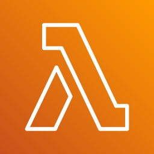
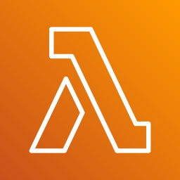

yY6 xj7Y`Û = xj7Y`Û W zU7hE5ÈÁ
One TOML file to rule them all
official ofiuco rules for multi-version multi-target Python setup
Michael Krasnyk
July 18, 2024
Random fun fact
The term "ofiuco" refers to the constellation Ophiuchus, which is known as the "Serpent Bearer" in English.
The name origin is from the Greek ὀφιοῦχος with the Latinized form Ophiuchus /ˌɒfiˈjuːkəs/ which was further simplified to ofiuco /o.fiˈu.ko/ in some languages.
The brightest star is Rasalhague from the Arabic الحواء رأس

Ref in-the-sky.org
Multi-platform Python setup at ruumi
Motivation for a "yet another Python rules" was:
- Running production artifacts on
- AWS Lambda 
running on
arm64architecture with Python 3.10—3.12 runtimes and packaged as a Zip file which will be executed on Amazon Linux 2 or 2023 with some pre-installed packages likeboto3. The lambdas must be small and used as pre-filters for SNS messages via
AWS SQS
via
AWS SQS - AWS Batch processing jobs running on AWS Fargate Spot packaged as Docker images and pushed to AWS ECS
- Services on AWS EC2
- AWS Lambda 
running on
- Development workflows on
- Developer machines with MacOS
aarch64or Linuxx86_64 - Training machines with NVIDIA card locally or at AWS SageMaker
- GitHub Actions for CI/CD
- Developer machines with MacOS
- Deployment via AWS CDK in TypeScript
ofiuco workflow
- Prepare PyPA
pyproject.tomlfile with tool sections[tool.poetry.*]
[[tool.poetry.source]]
name = "pytorch"
url = "https://download.pytorch.org/whl/cu121/"
priority = "explicit"
[tool.poetry.dependencies]
awslambdaric = "^2.0.4"
boto3 = "1.28.72"
botocore = "1.31.72"
...
safetensors = {version = "0.4.0", extras = ["numpy"]}
timm = "^0.9.10"
torch = [
{platform = "darwin", version = "2.2.1", source="pypi"},
{platform = "linux", url = "https://download.pytorch.org/whl/cu121/torch-2.2.1%2Bcu121-cp312-cp312-linux_x86_64.whl"},
]
torchinfo = "^1.8.0"
torchvision = [
{version = "0.17.1"},
{platform = "linux", version = "0.17.1", source="pytorch"},
]
Generate a lock file as
poetry updateor usingpoetry_updaterule defined at@ofiuco//python:poetry.bzl
- Add
poetry.lockfile parsing toMODULE.bazelas
poetry = use_extension("@ofiuco//python:extensions.bzl", "poetry")
poetry.parse(
name = "poetry",
lock = "@//tools/build_rules:poetry.lock",
)
use_repo(poetry, "poetry")
- Use Python dependencies as
py_library(
name = "model",
srcs = [
"network.py",
],
data = [
"conf/model/default.yaml",
],
deps = [
"//src:torch",
"@poetry//:pydantic",
"@poetry//:timm",
],
)
- Add virtual environments if needed
load("@ofiuco//python:py_venv.bzl", "py_venv")
py_venv(
name = "torch",
visibility = ["//visibility:public"],
deps = [
"@poetry//:numpy",
"@poetry//:torch",
],
)
Multiple platforms for AWS Lambda
Let's define a platform in BUILD file as
platform(
name = "aws_lambda",
constraint_values = [
"@platforms//os:linux",
"@platforms//cpu:arm64",
],
)
and Python lambda as
py_library(
name = "lambda",
srcs = ["lambda.py"],
deps = [
"//src/data/common:lambda_utils",
"@poetry//:awslambdaric",
"@poetry//:boto3",
"@poetry//:shapely",
],
)
Challenges:
- running unit tests in a host environment
- integration tests where
lambdais packed as a zip file for a fixed target platform - deployment has to be done for a platform which is defined from configuration
awslambdaricandboto3packages shall not be included into zip packageshapelypackage must have correct binary files
Platform transitions
The rule load("@ofiuco//lib:py_zip.bzl", "py_zip") has an attribute which is used as a transition
configuration for target:
py_zip(
name = "deploy_aws_lambda",
platform = ":aws_lambda",
target = ":lambda",
)
Also possible to exclude files from the target zip by path patterns
py_zip(
...
exclude = [
"**.dist-info/**",
"**/__pycache__/**",
"**/bin/*",
# Ignore some packages since hey are provided by AWS Lambda runtime context.
"ofiuco**/awslambdaric**",
"ofiuco**/boto3**",
...
],
)
OCI deployment
Define command_aws_batch as
load("@rules_multirun//:defs.bzl", "command_with_transition", "multirun_with_transition")
def _aws_batch_platforms_impl(settings, attr):
return {"//command_line_option:platforms": [":aws_batch"]}
aws_batch_transition = transition(
implementation = _aws_batch_platforms_impl,
inputs = [],
outputs = ["//command_line_option:platforms"],
)
command_aws_batch = command_with_transition(aws_batch_transition)
Define :deploy target as a push command with transition to aws_batch
oci_tarball(
name = "worker_tarball",
image = ":worker_image",
repo_tags = ["repo/project:latest"],
tags = ["manual"],
)
oci_push(
name = "worker_push",
image = ":worker_image",
remote_tags = ["latest"],
repository = ecr_registry.format(id = aws_account_id, region = aws_default_region,) + "/repo/project",
tags = ["manual"],
)
command_aws_batch(
name = "deploy",
arguments = [],
command = ":worker_push",
tags = ["manual"],
visibility = ["//visibility:public"],
)
How it works under the hood
- Lock files are parsed in a repository context and
BUILDfiles is generated with declarations
package(
name = "anyio",
constraint = "anyio==4.4.0",
description = "High level compatibility layer for multiple asynchronous event loop implementations",
files = {
"anyio-4.4.0-py3-none-any.whl": "sha256:c1b2d8f46a8a812513012e1107cb0e68c17159a7a594208005a57dc776e1bdc7",
"anyio-4.4.0.tar.gz": "sha256:5aadc6a1bbb7cdb0bede386cac5e2940f5e2ff3aa20277e991cf028e0585ce94",
},
deps = [":exceptiongroup", ":idna", ":sniffio", ":typing-extensions", "tomli", "pyreadline3", "colorama"],
markers = '''{"exceptiongroup":"python_version < \\\"3.11\\\"",
"typing-extensions":"python_version < \\\"3.11\\\"",
"tomli":"python_version < \\\"3.11\\\"",
"pyreadline3":"sys_platform == \\\"win32\\\" and python_version >= \\\"3.8\\\"",
"colorama":"platform_system == \\\"Windows\\\""}''',
visibility = ["//visibility:public"],
)
packagerule executed in a rule context with resolved toolchains"@bazel_tools//tools/python:toolchain_type"which is used to resolve markers and collect required dependencies"@bazel_tools//tools/cpp:toolchain_type"which is used to compile wheels if no binary files providedexecconfiguration Python toolchain to run pip install command with listed files and corresponding SHA256 checks
What is missing or not yet finished
- Support for Windows platforms
- Support for PDM and uv (requires #3347)
- Using Python for parsing lock files
- Build wheels with compiled dependencies from sources (psycopg vs psycopg-binary, XZ Utils backdoor, etc)
Thank you for your time!
I welcome any feedback on the rules and would be glad to make them "official", [sic].